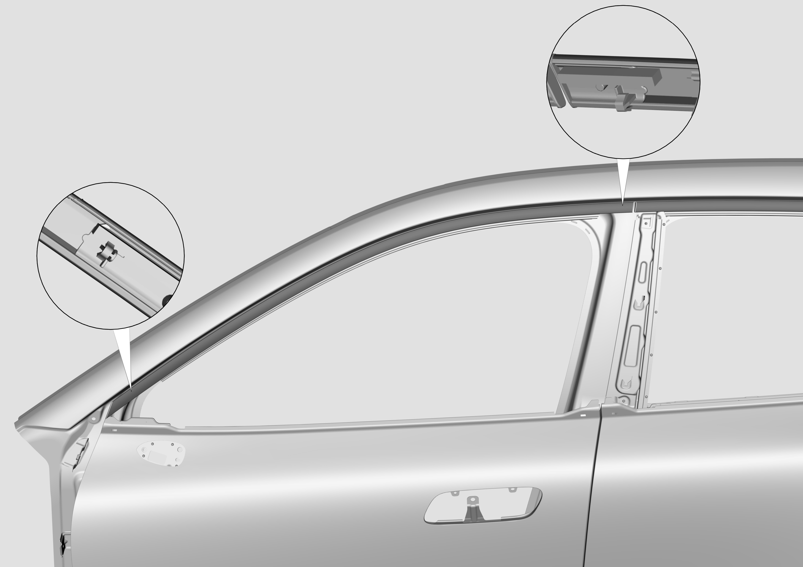
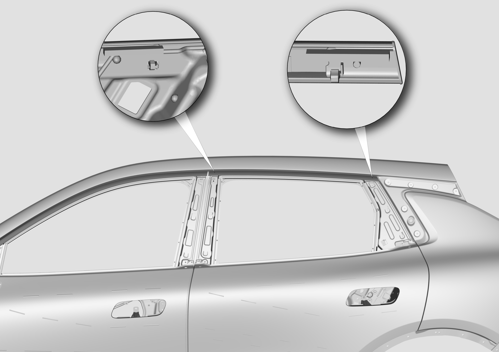
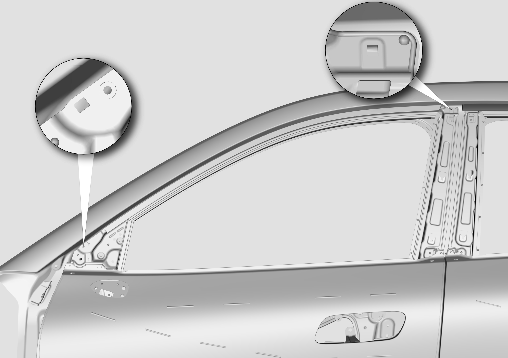
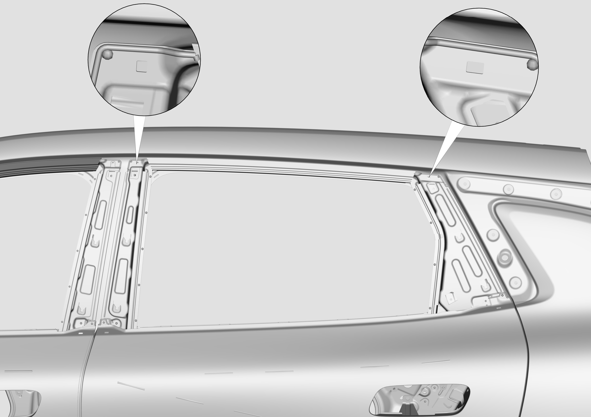

Снятие
1. Открыть переднюю и заднюю двери, выполнить Снятие и Установка узла внешней декоративной панели стойки B, см. Снятие и установка узла внешней декоративной панели стойки B.
2. Извлечь два фиксатора в местах, указанных стрелками на рисунке, медленно вытянуть декоративный хромированный молдинг оконного проема передней двери с обоих концов до полного снятия.

3. Извлечь два фиксатора в местах, указанных стрелками на рисунке, медленно вытянуть декоративный хромированный молдинг оконного проема задней двери с обоих концов до полного снятия.

Установка
1. Накинуть фиксаторы на обоих концах декоративного хромированного молдинга оконного проема передней двери на соответствующие пазы для позиционирования, прижать молдинг до полного прилегания к верхнему оконному проему и вдавить фиксаторы в пазы, завершив сборку.

2. Накинуть фиксаторы на обоих концах декоративного хромированного молдинга оконного проема задней двери на соответствующие пазы для позиционирования, прижать молдинг до полного прилегания к верхнему оконному проему и вдавить фиксаторы в пазы, завершив сборку.
